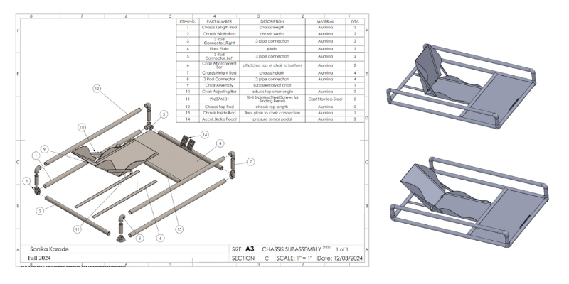

Go STEM! Kart
ME 1670 | Computer-Aided Design & Manufacturing

Project Overview
The Go STEM! Kart project challenged our team to design, model, and simulate a low-cost ($150 budget limit) go-kart from scratch. This project emphasized the transition from conceptual ideation to a fully realized digital prototype.
SoftwareSolidWorks / Fusion 360
Design FocusParametric Design & Assemblies
DeliverablesExploded Views & BOM
Core SkillsTolerance Analysis & Animation
My Design Contributions
I was responsible for the design and modeling of the driver interface and structural chassis sub-assemblies:
- Driver Interface: Modeled the brake and accelerator pedals, steering wheel, and tire hubs.
- Structural Seating: Designed the multi-part chair assembly and the chair attachment bar system.
- Chassis Components: Created the floor plate, chassis rods, and the 2-rod/3-rod connectors that unified the frame.

Technical Challenges
- Dimensional Consistency: Coordinated overall dimensions prior to CAD using parametric dimensions.
- Mating Logic: Managed complex sub-assembly connections to ensure steering and pedal travel remained unconstrained.
- Compatibility Fixes: Created custom "basic parts" to assist with the practicality of mating during the final assembly phase.